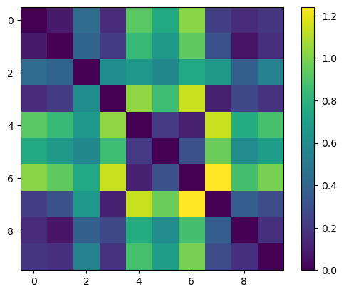
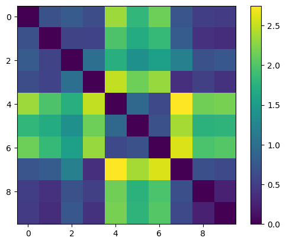
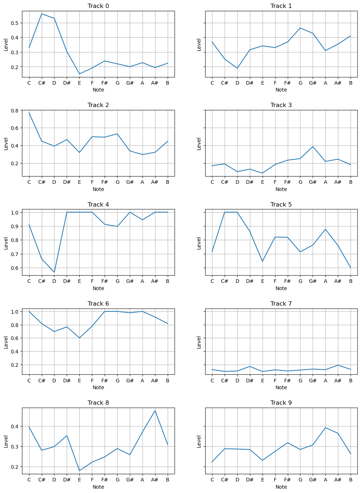
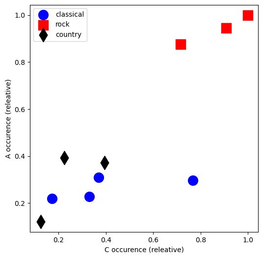
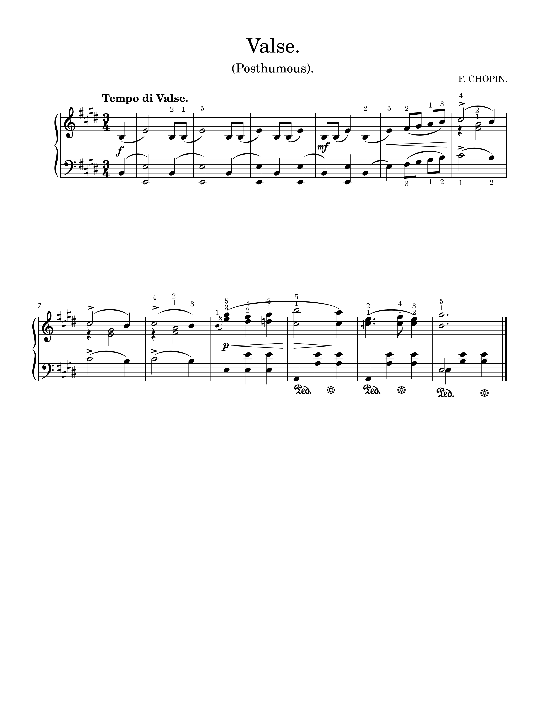
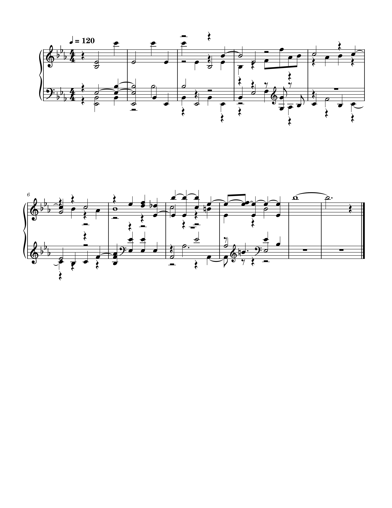

These graphs use 10 audio tracks, the first 7 provided by the instructor. Tracks 0-3 are classical and 4-6 are rock. The next three tracks are the same as the past two weeks; track 7 is
the Prelude, track 8 is the Sonata, and track 9 is the Symphony. As expected, these three groupings are clear in the graphs. Since my tracks are also classical/piano tracks, they also
show to be very similar to the first four tracks.
| A's and C's | All Notes |
|---|---|
|  |  |
| Mean Feature Vector Representation | 2D A vs. C Occurrence* |
|---|---|
|  |  |
*The 3 tracks marked as country in this graph are my 3 classical tracks I incorporated
Waltz in E Major B.44 - Chopin
| Original Track | Polyphonic Transcription |
|---|---|
|  |  |
After applying the polyphonic transcription, it was able to generally capture the rhythm and melodic direction, especially in the second half of the score. The chords, while not correct, have similar relations, making the sections sound relatively similar. It additionally has the tempo marked at 120 bpm, while the original has Tempo di Valse, which is roughly the correct tempo. However, the key signature is different, marked as Eb major instead of E major, and the notes are also different, with some missing. The time signature is 4/4 instead of 3/4, which is interesting because parts of the song still sound rhythmically correct, so the transcription had to incorporate some strange note groupings instead of detecting the correct time signature. There are no dynamic, pedal, or fingering markings in the transcription, and there is much more going on, especially with extra rests from multiple voices. Because of all these differences, while this transcription can provide a quick baseline, it's important to go back and check and refine every aspect of the song.